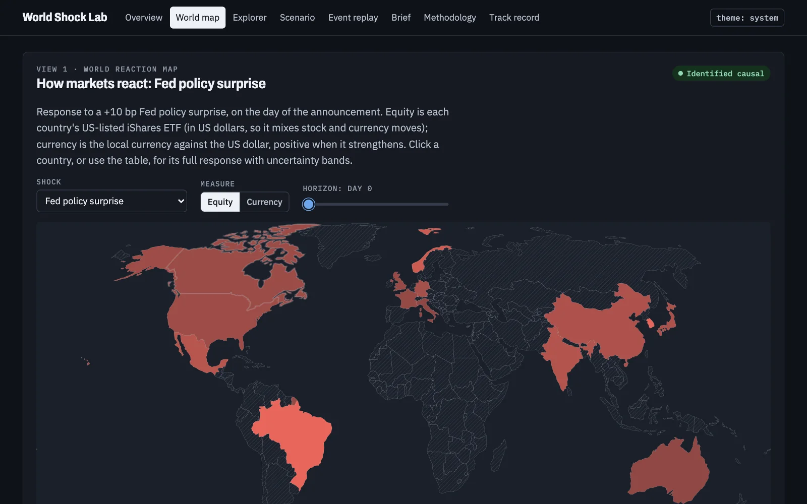

Mission 02 / Macro shocks and machine learning
World Shock Lab
How a central-bank surprise ripples through 53 markets, with forecasts published before each decision.
An open research project that measures how identified shocks move global assets, checks its estimators by simulation and by replicating published papers, tests in advance whether machine learning adds anything, and serves the results as a scenario tool.

Problem
Markets move for many reasons at once. The question is what a surprise itself causes.
Markets move for many reasons at once, so a correlation between a decision and a stock index says little about cause. The project measures the response of world and Canadian markets to Federal Reserve and Bank of Canada surprises and to OPEC oil-supply news. It also asks whether the same shock matters more in some regimes, and whether machine learning forecasts announcement-day moves better than a linear model.
Every output is labelled as one of four kinds of evidence: identified causal, reduced form, model forecast, or hypothetical scenario.
Data
- Fed surprises. The change in interest-rate futures in a 30-minute window around each FOMC announcement since 1990, split into a policy surprise and an information surprise.
- Bank of Canada surprises. No free intraday Canadian data, so the project dates 195 scheduled decisions from the Bank's press releases and uses the announcement-day change in the 2-year Government of Canada yield. Its variance on announcement days is 2.82× matched control days (90% interval 1.99 to 4.00), and 5.71× after removing the same-day US move.
- Oil and risk. OPEC oil-supply news, plus geopolitical-risk and trade-policy indexes labelled reduced form because they measure news coverage.
- Markets. 53 global assets. Yields and exchange rates from FRED, Canadian yields from the Bank of Canada, and prices for Canadian banks and country ETFs. Downloads are stored once, read-only, with SHA-256 fingerprints.
Method
- Event-study local projections. For each horizon from the announcement through 20 trading days, the cumulative move is regressed on the surprise. In simulation the 90% bands contain the true response 90% of the time. A zero-filled alternative manages 86%, so it is only a robustness check.
- Monthly macro effects. Local projections with instrumental variables, reported with the effective first-stage F and Anderson–Rubin sets, next to a proxy Bayesian vector autoregression.
- State dependence. Each surprise is interacted with a regime measured beforehand. Wild cluster bootstrap p-values and Benjamini–Hochberg control cover the full set of regime tests.
- Pre-registration. Splits, metrics, regime tests, and the rule for whether machine learning adds value were tagged in git before any model was fitted. The held-out test set was scored once.
Results
Canadian stocks move more on a Fed surprise than on a Bank of Canada surprise of the same size.
Each surprise is scaled to a 10 basis-point move in its own 2-year yield. A second Bank of Canada estimator, Rigobon–Sack, narrows the gap. The direction of the Fed's lead does not depend on the method. 11 of 13 published findings replicate, including 6 of 7 that are not true almost by construction. Moved onto 1,000 sets of random non-announcement days, no placebo is as large as the real Fed effects on the US 2-year yield and US stocks. 24 of 30 headline responses keep their sign in every pre-registered robustness variant. 126 of 318 shock-to-asset responses survive false-discovery control.
15 of 80 regime tests are suggestive before correction, and 0 of 80 survive false-discovery control. The sample can only detect large regime differences.
Machine learning
Six models predict the 1-day and 5-day move of eight assets after each FOMC, Bank of Canada, and OPEC announcement, using only that announcement's surprise and the state of the economy before it. Validation years chose the linear projection and a neural network. The test set, 168 announcements from 2019 to 2026, was scored once.
The neural network's error minus the linear model's is −0.003, with a 90% interval of −0.019 to +0.014 that includes zero. By the rule fixed in advance, there is no evidence that machine learning adds value.
A second pre-registered study, ml-study-v1, scores the same 168 held-out announcements. The numbers are in results/mlstudy/final.json on main, merged on 2026-10-20 as commit c955cc1. Pull request 1 is merged. The table above is the earlier benchmark and is unchanged.
Quantile gradient boosting cut 5% pinball loss to 1.446, versus 1.558 for the Gaussian linear baseline. The difference is −0.112, with a 90% interval of −0.228 to −0.010. The file's verdict is that this model adds value on the 5% tail. That is the pre-registered pinball loss, not a calibration claim.
The temporal CNN's scaled mean error is 1.157, against 1.142 for the linear projection. The difference is +0.015, with a 90% interval of −0.006 to +0.037. That interval includes zero, so the temporal CNN did not beat the linear model on the mean.
Limits
- Machine learning did not beat the linear model on the average move, in the original benchmark or in ml-study-v1 (temporal CNN +0.015, 90% interval −0.006 to +0.037). Quantile boosting won only on 5% tail pinball loss (−0.112, 90% interval −0.228 to −0.010), which is not a calibration claim. No regime effect survived correction.
- The Bank of Canada proxy still carries some common North American rate news, so every Bank of Canada result is shown next to the Rigobon–Sack estimate.
- Monthly macro effects rest on weak instruments (first-stage F of 3.1), so they are labelled suggestive.
- The proxy BVAR's bootstrap bands are too narrow in simulation. That is documented rather than tuned away.
Live forecasts
Before each Fed and Bank of Canada decision, a conditional forecast is committed to the public repository: if the announcement moves the bank's own 2-year yield by −10, 0, or +10 basis points, here is the expected move in the Canadian 2-year, the Canadian dollar, and Canadian banks. Forecasts are not edited after publication. The first forecasts, for the decisions of 2026-10-28, were published on 2026-10-13.
The scenario tool loads in under 3 s on a throttled phone profile. 157 automated Python tests run in CI, and a full rerun took 11 min and reproduced the results. Tests fail if the site shows a number that is not in the result files.
The live site stays at shmorsi.github.io/world-shock-lab, served from the World Shock Lab repository. Figures on this page are read from data/projects.json.
